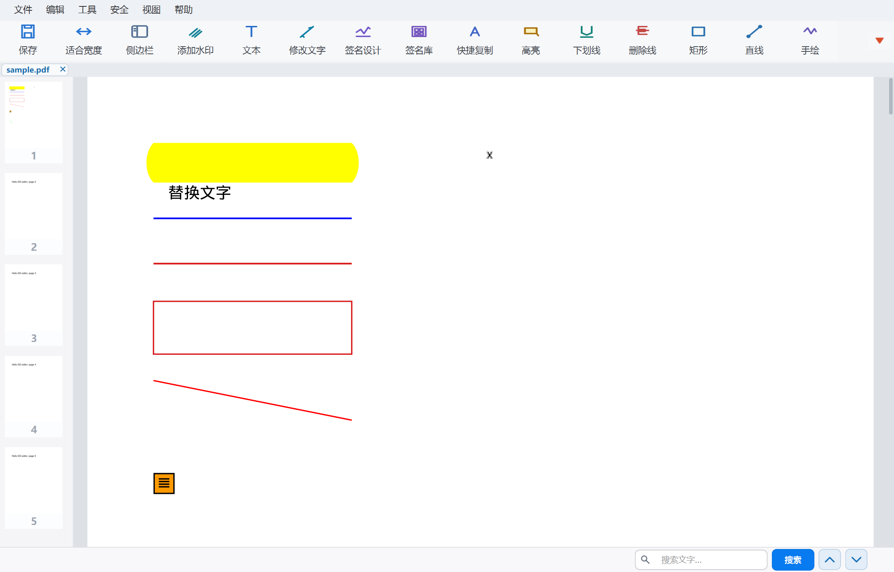

顺畅阅读
连续滚动、适合宽度、多标签页、全屏模式与可调缩略图侧栏，让长文档浏览更自然。
- PDF / DOCX / DOC
- 页面拖动排序
- 中英文界面
阅读、编辑、批注、OCR、签名与加密，集中在一个轻巧、清晰的桌面工具里。

常用 PDF 工作流无需在多个软件之间来回切换。
连续滚动、适合宽度、多标签页、全屏模式与可调缩略图侧栏，让长文档浏览更自然。
添加文本、修改文字、插入图片，并可使用高亮、下划线、删除线、矩形、直线与手绘标记。
识别扫描 PDF 的当前页面或全部页面，把图片中的文字转成可检索、可复制的内容。
签名设计支持字体、字号、加粗与斜体；签名库可保存常用签名，批注内容悬停即可查看。
AES-256 密码保护与打印、复制、编辑、批注权限控制，并支持灵活的文字水印设置。
合并 PDF、按范围或每 N 页拆分、提取页面、删除页面，并从缩略图直接多选和重新排序。
界面针对 Windows 高 DPI 显示优化。紧凑功能区保留文字与图标，侧边栏会随宽度自动调整缩略图，内容区同步保持最佳阅读宽度。
主题同步主界面、弹窗、菜单与标题栏协调一致
自定义工作区功能按钮可拖动排序，侧边栏默认状态可保存
快捷操作右键菜单与键盘快捷键覆盖常用工作流

设置打开密码，精细控制打印、复制、编辑与批注权限；也可在验证所有者密码后移除保护。
内置 ONNX Runtime OCR 能力，无需额外配置即可识别中文与英文扫描内容。
适用于 Windows 10 / 11，安装时可选择中文或英文，并可关联 PDF 文件。